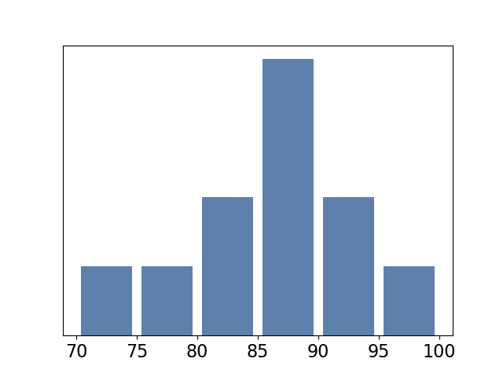

Jed Rembold
Tuesday, February 15, 2022

| Column | Type |
|---|---|
id |
SERIAL |
name |
TEXT |
age |
SMALLINT |
gender |
VARCHAR(15) |
met_thru |
VARCHAR(20) |
last_talk |
DATE |
notes |
TEXT |
SELECT name
FROM correspondents
WHERE gender = 'Female' and last_talk < '2018';SELECT avg(age)
FROM correspondents
WHERE notes ILIKE '%had baby%'
OR notes ILIKE '%pregnant%';SELECT DISTINCT met_thru
FROM correspondents
ORDER BY last_talk DESC LIMIT 5;SELECT
min(red - cyan::INT) AS new_a,
percentile_disc(0.5) WITHIN GROUP
(ORDER BY cyan) AS new_b,
max(2 * red + green) AS new_c
FROM mysterious_table
WHERE blue ILIKE '%odd'
AND orange BETWEEN '1:00' AND '13:00';| Column | Type |
|---|---|
new_a |
INTEGER |
new_b |
REAL |
new_c |
NUMERIC |
William Ellison,57 Elizabeth Dr.,Merrillville,IN,46410
Colten Spears,8457 Sycamore Ave.,Amsterdam,NY,12010
Kendra Aguilar,76 North Alton Lane,Tualatin,OR,97062
Natalia Church,7789 Ryan Dr.,Englewood,NJ,07631id field.| c1 | c2 | c3 | c4 |
|---|---|---|---|
| 2022-06-29 | Curling | 24 | 9.5 |
| 2022-11-15 | Tennis | NULL |
5 |
| 2022-06-12 | Baseball | 2 | -0.5 |
| 2022-12-27 | Ultimate | 0 | 2.1 |
| 2022-04-15 | Surfing | NULL |
4.5 |
| 2022-10-03 | Cheerleading | 10 | -1 |
SELECT c2, c3 + c4 AS "add"
FROM amazing
WHERE c2 ILIKE '%e%i%'
ORDER BY c2; | c1 | c2 | c3 | c4 |
|---|---|---|---|
| 2022-06-29 | Curling | 24 | 9.5 |
| 2022-11-15 | Tennis | NULL |
5 |
| 2022-06-12 | Baseball | 2 | -0.5 |
| 2022-12-27 | Ultimate | 0 | 2.1 |
| 2022-04-15 | Surfing | NULL |
4.5 |
| 2022-10-03 | Cheerleading | 10 | -1 |
SELECT COUNT(*) % COUNT(c3) AS rem
FROM amazing
WHERE c4 > 0;| c1 | c2 | c3 | c4 |
|---|---|---|---|
| 2022-06-29 | Curling | 24 | 9.5 |
| 2022-11-15 | Tennis | NULL |
5 |
| 2022-06-12 | Baseball | 2 | -0.5 |
| 2022-12-27 | Ultimate | 0 | 2.1 |
| 2022-04-15 | Surfing | NULL |
4.5 |
| 2022-10-03 | Cheerleading | 10 | -1 |
SELECT c2
FROM amazing
WHERE c1::TEXT ILIKE '%-0_-%'
ORDER BY c4;| c1 | c2 | c3 | c4 |
|---|---|---|---|
| 2022-06-29 | Curling | 24 | 9.5 |
| 2022-11-15 | Tennis | NULL |
5 |
| 2022-06-12 | Baseball | 2 | -0.5 |
| 2022-12-27 | Ultimate | 0 | 2.1 |
| 2022-04-15 | Surfing | NULL |
4.5 |
| 2022-10-03 | Cheerleading | 10 | -1 |
SELECT sum(c4)
FROM amazing
WHERE c3 IS NULL OR c4 < 0;| Name | Type | Description |
|---|---|---|
| puzzle_id | INT |
The unique puzzle id number |
| release_date | DATE |
The day the puzzle was publically available |
| solution | CHAR(5) |
The 5 letter solution to the puzzle |
| player_name | TEXT |
The name of the player |
| guesses | SMALLINT |
Number of guesses. Null if more than 6 |
One of the commands below to create a table is valid. Which is it?
CREATE TABLE rev_a (
"name" TEXT PRIMARY KEY,
"year" INT PRIMARY KEY,
"class" TEXT
);CREATE TABLE rev_a (
"name" TEXT UNIQUE NOT NULL,
"year" INT
CHECK("class" != 'junior'),
"class" TEXT
);CREATE TABLE rev_a (
"name" TEXT,
"year" INT,
"class" TEXT REFERENCES other,
CONSTRAINT "name" PRIMARY KEY );CREATE TABLE rev_a (
"name" TEXT,
"year" INT,
"class" TEXT,
PRIMARY KEY ("name"),
UNIQUE ("year","class"));Postgres will automatically index any column that is a primary
key or which has the UNIQUE
constraint
You can choose to set up indexes on other columns as well, but do so outside of the table creation
CREATE INDEX index_name ON table_name (col_name);If you decide you want to remove an index, you do so using the index name:
DROP INDEX index_nameEXPLAIN keyword to give
you information about what the database is doing in the backgroundEXPLAIN ANALYZE will also give you
timing information about how long it took a query to runEXPLAIN always comes at the start of
your queryEXPLAIN ANALYZE reports to you the time
it took the server to process the query, not necessarily the time it
took your client to finish getting and rendering the response!
EXPLAIN ANALYZE